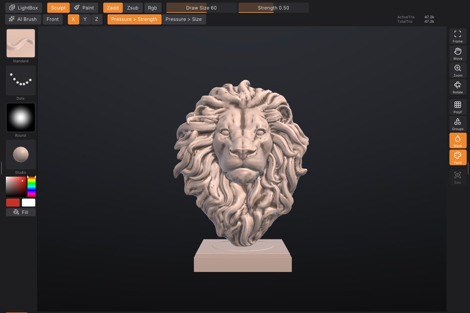
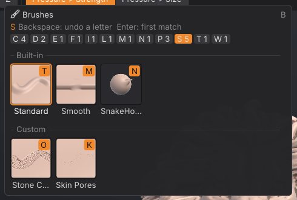
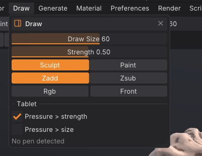
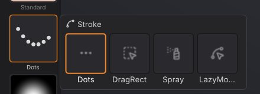
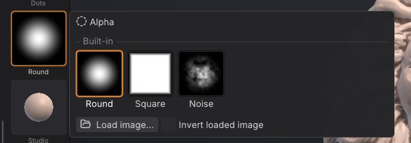
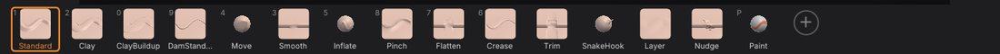

Sculpting and brushes
This chapter covers everything that happens when you drag a brush across a model: the built-in brushes and the custom brushes that ship with SculptForge, brush size and strength, modifier keys, stroke types, alphas, symmetry and pen pressure. To design your own brushes, see Brush Lab and sharing brushes.


Your first stroke#
- Pick a brush: click it on the bottom shelf, press its number key, or press B to open the brush picker.
- Left-drag on the model. The brush works on the surface under the cursor.
- Hold Alt while dragging to invert the brush (dig in instead of building up), or hold Shift to smooth.
- Press Ctrl+Z to undo a stroke, Ctrl+Shift+Z (or Ctrl+Y) to redo it. Each SubTool keeps its own history of up to about 1 GB; the oldest steps are dropped beyond that.
Dragging on the background never sculpts: it rotates the view (see Navigation). The brush only works on the active SubTool, and only on parts that are visible and not masked.
Built-in brushes#
SculptForge has fourteen sculpting brushes plus the Paint brush. The first ten have number keys; all of them are on the bottom shelf by default and in the brush picker.
| Brush | Key | What it does | With Alt |
|---|---|---|---|
| Standard | 1 | Raises the surface along the stroke, the all-purpose brush. | Digs in |
| Clay | 2 | Builds up clay that fills the hollows first, with a slightly flat top. | Carves away |
| Smooth | 3 | Relaxes the surface, evening out bumps. The same brush Shift gives you. | No change |
| Move | 4 | Grabs the surface under the cursor and pulls it along, parallel to the screen. | No change |
| Inflate | 5 | Swells the surface outward along its normals. | Deflates |
| Crease | 6 | Cuts a sharp crease and pinches its sides in. | Raises a ridge |
| Flatten | 7 | Presses the surface toward a plane through the brush area. | Pushes away from the plane |
| Pinch | 8 | Pulls the surface toward the stroke to tighten edges. | Spreads it apart |
| DamStandard | 9 | A narrow, deep V-shaped crease with the sides pinched in. | A sharp ridge |
| ClayBuildup | 0 | Square, flat-topped clay strokes for blocking in forms. | Carves flat-bottomed |
| SnakeHook | Pulls the surface out into horns and tendrils that taper as you drag. | No change | |
| Trim | Trim Dynamic: shaves away everything above a plane for hard surfaces. | Fills up to the plane | |
| Layer | Raises the surface to one fixed height per stroke; overlapping passes never stack. | Lowers to a fixed depth | |
| Nudge | Slides the surface sideways along the stroke without lifting it. | No change | |
| Paint | P | Paints colour without sculpting. See Polypaint and materials. | Paints back to white |
Notes on particular brushes:
- Move and SnakeHook move the surface with the cursor instead of placing dabs, so stroke types (Dots, Spray and so on) don't apply to them.
- Layer sets its height from the brush size and Z Intensity. Pen pressure lowers the height when Pressure > Strength is on, so you can feather the edge of a layer.
- Trim gives crisp planes on cylinders and edges. Use it with Front on when you work on thin shapes.
Custom brushes that ship with SculptForge#
Besides the built-in brushes, SculptForge ships seven custom brushes. They are recipes: data that you can open and change in Brush Lab. They appear in the Custom section of the brush picker and in Brush > Custom brushes.
| Brush | What it does |
|---|---|
| Wrinkle | Fine, sharp creases for skin folds and fabric wrinkles. |
| Palette Knife | Flattens and drags clay sideways like a sculptor's knife. |
| Dragon Scales | Stamps rounded overlapping scales along the stroke. |
| Stone Chisel | Scrapes hard planes and breaks them up with cracks for rocks and ruins. |
| Skin Pores | Sprinkles tiny pores for close-up skin detail. |
| Clay Buildup | Builds up flat-topped strokes of clay for blocking in forms. |
| Edge Wear | Chips and softens only the sharp edges and ridges, for weathered props. |
Custom brushes respond to Alt, Shift, the mask, symmetry and the stroke settings just like built-in ones. Their thumbnails carry a small sparkle when you put them on the bottom shelf.
Pick a brush#
You can choose a brush in several places:
- Bottom shelf: click a tile. The active brush has an orange outline and the number key is shown in the corner of each tile.
- Number keys: 1 to 9 and 0 pick the first ten built-in brushes (see the table above); P toggles the Paint brush.
- Brush tile at the top of the left shelf: click it to open the brush picker beside it.
- Brush palette: the same grid of thumbnails, with a filter field, plus your custom brush list.
- Command palette (F3): type the brush name and press Enter.
The brush picker#
Press B to open the brush picker under the mouse. It shows a Recent row (once you have picked brushes), then Built-in, Custom and Library sections. The Library section lists .sfbrush files in the Brushes folder of your LightBox library that aren't loaded yet; picking one loads it.


The picker works the ZBrush way, by typing letters:
- Press B.
- Type the first letter of the brush. Only brushes starting with that letter stay, and each shows an orange key badge: the next letter that tells it apart from the others.
- Press the letter on the badge to pick that brush. For example B, S, T picks Standard, and with the brushes that ship, B, C, L picks Clay.
If no brush name starts with what you typed, the picker falls back to names that contain it. Backspace removes the last letter, Enter picks the first match, and Esc or a click outside closes the picker. The letter chips along the top (A 2, C 4 ...) show how many brushes start with each letter; click one to filter by it.
Hover a tile for a large preview and the brush's description. Right-click a tile for Add to bottom shelf, and on custom brushes also Copy brush code, Rename..., Save as .sfbrush..., Delete... and Reveal in folder (see Brush Lab and sharing brushes).
Draw Size, Z Intensity, RGB Intensity and Focal Shift#
These values control every brush, with ZBrush's names and keys. Draw Size and Z Intensity are on the top shelf; all four are in the Draw palette and the QuickMenu.
| Setting | Range | Default | How to change it |
|---|---|---|---|
| Draw Size | 2 to 800 | 60 | Brush radius in screen pixels. [ and ] make it 10% smaller or larger (hold to repeat). S opens a slider at the cursor. |
| Z Intensity | 1 to 100 | 50 | How strongly each dab changes the surface. U opens a slider at the cursor. |
| RGB Intensity | 1 to 100 | 100 | How strongly painting colours the surface (the Paint brush, and sculpting with Rgb on). I opens a slider at the cursor. |
| Focal Shift | -100 to 100 | 0 | The brush falloff. Below 0 the full-strength centre widens into a broad, hard tip; above 0 it narrows to a soft point. O opens a slider at the cursor. |
Because Draw Size is measured on screen, the brush covers less of the model as you zoom in, which is what you want for detail work.
The brush cursor shows two rings, as in ZBrush: the outer one is the Draw Size, the inner one is Focal Shift (where the brush works at half strength). Masking, painting, Move and SnakeHook follow Focal Shift too; custom brushes made in Brush Lab keep their own tip shape.
The S, U, I and O pop-ups take the mouse or the keyboard: drag the slider and release to close it, or type a number and press Enter (a minus first for a negative Focal Shift). Esc closes the pop-up without typing anything new.
Smooth's own Z Intensity#
Smooth keeps a Z Intensity of its own, as in ZBrush, so a gentle Standard stroke at 10 still smooths at full speed. Hold Shift (or pick the Smooth brush) and the Z Intensity slider shows Smooth Z Intensity: change it there, or hold Shift and press U. It starts at 50.


Sculpt, Paint, Zadd, Zsub, Rgb and Front#
These toggles sit on the top shelf and in the Draw palette:
| Control | What it does |
|---|---|
| Sculpt / Paint | Sculpt makes brushes change the shape. Paint (P) paints colour only. |
| Zadd / Zsub | Zadd makes brushes add (the default), Zsub makes them subtract. Alt flips the current choice for one stroke. |
| Rgb | Sculpt brushes also paint the current colour as they sculpt (ZBrush Rgb with Zadd). |
| Front | Front faces only: brushes leave the far side of thin parts alone, such as the back of an ear or a cape. |
The Brush palette has the same Front and invert settings as the checkboxes Front faces only and Invert (Alt).
Modifier keys while sculpting#
| Hold | Effect |
|---|---|
| Alt | Inverts the brush for this stroke (see the table of brushes). |
| Shift (before the stroke) | Smooths with the Smooth brush, whatever brush is active, at Smooth's own Z Intensity. With the Paint brush active, Shift still smooths the shape. |
| Shift (after the stroke started) | Draws a straight line from where you pressed Shift, snapped to 45 degree steps on screen. Let go of Shift to carry on freehand. |
| Ctrl | Paints a mask instead of sculpting; Ctrl+Alt erases it. A Ctrl+click without dragging blurs the mask (Ctrl+Alt+click sharpens it). See Masking. |
| Ctrl+Shift | Visibility gestures: isolate, hide and show polygroups. See Polygroups and visibility. |
The QuickMenu#
Press Space for ZBrush's QuickMenu under the cursor: the Brush, Stroke, Alpha and Material tiles, Draw Size, Focal Shift, Z Intensity and RGB Intensity, Zadd / Zsub, Sculpt / Paint, Rgb and X symmetry. Hold Space and let go to close it again (it stays while the pointer is on it), or tap Space to keep it open until you click elsewhere or press Esc. Clicking a tile opens its picker.
Strokes#
The stroke type decides how cursor movement becomes brush dabs. Choose it from the Stroke tile on the left shelf, which opens the stroke picker, or from the Stroke palette.


| Stroke | What it does | Setting |
|---|---|---|
| Dots | Even dabs along the path: the classic brush stroke (default). | None; spacing comes from the brush. |
| DragRect | Click and drag one stamp: the drag length sets its size and its direction the rotation. Great with alphas. | None |
| Spray | Scattered dabs of random size, strength and rotation, for organic texture. | Scatter (0 to 2, default 1): how far dabs land from the cursor, as a fraction of the brush size. |
| LazyMouse | The brush trails the cursor on a string, for smooth, steady lines. | Lazy radius (1 to 300 px, default 40): longer is steadier. |
The setting slider appears under the stroke tiles when Spray or LazyMouse is selected. With LazyMouse, the viewport draws the string between the cursor and the brush point.
Notes:
- With DragRect, the stamp is placed where you first click. While you drag, it is redrawn at the new size and angle, and it is committed when you release.
- Mask strokes (Ctrl) always use dots, even when DragRect is selected.
- Custom brushes set their own dab spacing and can add jitter (see Brush Lab).
Alphas#
An alpha is a grayscale stamp that shapes the brush tip: white is full effect, black is none. It affects every brush, built-in or custom. Choose one from the Alpha tile on the left shelf (the alpha picker) or the Alpha palette, which also shows a large preview of the current alpha.


| Alpha | What it does |
|---|---|
| Round | The plain round falloff (no alpha). The default. |
| Square | A square stamp with soft edges. |
| Noise | A noisy stamp for rough, organic texture. |
To use your own image:
- Click Load image... in the alpha picker or the Alpha palette.
- Choose a PNG, JPG, BMP, TGA, PSD or GIF. Colour images are converted to grayscale.
- Turn on Invert loaded image before loading if your image is white where it should have no effect.
Images you keep in the Alphas folder of your LightBox library (Documents/SculptForge/Alphas by default) appear in the picker's Images section, so you can switch between them with one click. The alpha's top edge points up the screen; with DragRect it follows the drag direction instead.
From a script: brush_set_alpha name=square, or brush_set_alpha path=bark.png invert=true.
Symmetry#
Symmetry mirrors every stroke, including mask and paint strokes.
- X mirrors left and right. It is on by default; press X to toggle it.
- Y mirrors top and bottom, and Z mirrors front and back. They have no default key (you can assign one; see The interface).
The X, Y and Z buttons are on the top shelf and in the Transform palette. You can combine them: X and Z together give four-way symmetry.
Symmetry mirrors across the scene's axes through the origin. Models that are centred on the origin, such as SculptForge's primitives and most character exports, mirror correctly. If a stroke lands in the wrong place on the other side, the model is off-centre.
Pen pressure and tablets#
SculptForge reads pen pressure from graphics tablets and pen displays through the operating system. When it receives pen input, the Draw palette shows Pen pressure with the current value; before that it says No pen detected.
Two toggles decide what pressure does. They are on the top shelf and in Draw > Tablet:
| Toggle | Default | Effect |
|---|---|---|
| Pressure > Strength | On | Pen pressure scales the brush strength. |
| Pressure > Size | Off | Pen pressure scales the brush size (down to 5% at the lightest touch). |
Pressure applies only to strokes made with the pen; mouse strokes always use full pressure. Custom brushes also have a Pressure curve setting that makes them respond to a light or a firm touch (see Brush Lab). If the pen moves the cursor but pressure does nothing, see Troubleshooting.
Preferences > Tablet checks and tunes the pen:
- a pressure meter and a draw-test area, to see what the tablet reports at a light touch and a full press;
- a pressure curve for all brushes (Soft, Linear or Firm, or set Curve, Minimum, Maximum, Threshold and Full pressure at yourself), applied before each brush's own curve;
- the eraser end (default Invert, like holding Alt) and the side buttons (default: lower button right-click to rotate the view, upper button Invert, third button Pan view).
Store Config (Ctrl+Shift+I) keeps these settings. Setup notes for Windows Ink, macOS and Linux are in docs/tablet.md.
Customize the bottom shelf#
The bottom shelf holds your most-used brushes. By default it shows Standard, Clay, ClayBuildup, DamStandard, Move, Smooth, Inflate, Pinch, Flatten, Crease, Trim, SnakeHook, Layer, Nudge and Paint.


- Add a brush: click the + tile at the end of the shelf and pick a brush, built-in or custom. Or right-click any tile in the brush picker and choose Add to bottom shelf.
- Remove a brush: right-click its tile and choose Remove from shelf.
- Reorder: turn on Preferences > Config > Enable Customize, then Ctrl+Alt+drag a tile to a new place.
- Change a brush's key: Ctrl+Alt+click its tile, then press the new key.
Shelf changes last until you quit. Press Ctrl+Shift+I (Store Config) to keep them. See The interface for more on customizing.
Sculpt from a script#
The stroke command applies a brush along a path on the active SubTool, as one undo step. It is useful for scripted detailing and for AI agents:
sculptforge-cli -c 'new_sphere subdivisions=6; stroke brush=Crease points="-0.6,0.2,0 0,0.4,0 0.6,0.2,0" symmetry=x; export_glb path=out.glb'Points are projected onto the surface along view (default 0,0,-1, the front view). radius (world units), strength, pressure, invert, spacing, curve and seed work as in the viewport. See Scripting and automation.
See also#
- Brush Lab and sharing brushes: design brushes with AI, the brush library and brush codes
- Masking: protect areas from every brush
- Polypaint and materials: Paint brush, Rgb and colour
- Sculpt layers and blend shapes: sculpt into a layer you can dial in and out
- Keyboard and mouse reference